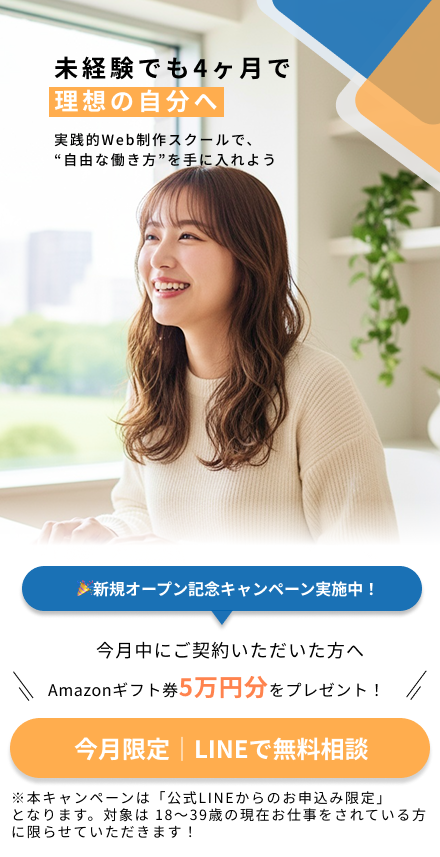
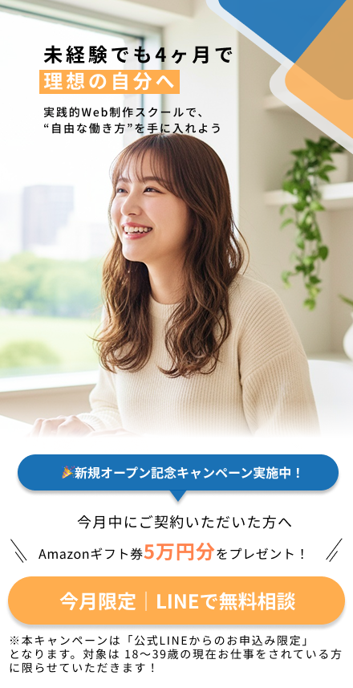

副業として月5~10は稼げるようになりたい
WEBスキルを身に付けて、個人で仕事を受注できるようになりたい
そんな思いから副業に興味を持つものの…

このような不安から、
なかなか一歩が踏み出せずにいませんか？

 TORA PROJECTなら
TORA PROJECTなら
こんなWEBデザイナーを
目指せます！
知識ゼロから、自分の力で
Webサイトを作れるようになる

副業・フリーランスとして
お仕事を受けられるスキルを習得

「好きな場所で、好きな仕事を」
実現できる働き方へ

TORA PROJECT って？
「スキル」だけじゃない、
"自分を変える"スクールです。
TORA PROJECTは、
Web制作を通して「自分の可能性」を広げる実践型スクールで、動画を見て終わりではなく、現役講師と一緒に、一歩ずつ”できるようになる”までサポートします。

STRENGTHS
TORA PROJECTの
3つの強み

無理なく続けられる設計で、成長を習慣化。
忙しい人でも無理なく続けられるよう、
1人ひとりのスケジュールに合わせた「個別プラン」をご提案します

分からない時、そばにいる人がいる安心感。
分からない時はいつでも質問OK!
Slackや定期セッションで、あなたの“つまずき”に寄り添います。
「一人じゃない」から最後までやり切れる。

学びを通して、”自分の未来”を動かす力を。
最終課題では、実際の企業案件に挑戦。
「学ぶだけ」で終わらず、
ポートフォリオとして使える成果物を残せる。
なぜ今、Webデザインやプログラミングが
“副業・フリーランス”に最適なのか？
副業を始めたい。もう少し収入を増やしたい。
そんな想いから、「Webデザイン」や「プログラミング」を学び始める人が今、とても増えています。
なぜこの2つのスキルが
“副業・フリーランス”の入り口として選ばれているのでしょうか？
それは、ただ流行っているからではなく、
時代の変化と働き方の自由化に合わせて、Webスキルの価値がこれまで以上に高まっているからです
01
需要が安定して高い
企業も個人も、今や「Webで集客・販売」が当たり前。
サイト制作・実装スキルは常にニーズがあり、
案件に困りにくい安定した領域です。

02
PC1台で完結・在宅OK
Web制作は、場所と時間を選ばない働き方。
本業や家事のスキマ時間でも進められ、
夜2時間からでも収入につながるスキルです。

03
積み上がる“スキル資産”
学習した内容がそのまま将来の資産に。
副業→転職→独立まで選択肢が広がり、続けるほどレートを上げやすい分野です。

04
AI時代で価値が上がる
AIの発展により、作業の自動化は進んでも、
“提案力・設計力・デザイン力”の価値はむしろ上昇。
AIを活用できる制作者は、今後ますます求められます。
 1.png) 差別化ポイント
差別化ポイント
TORAPROJECTはここが違う!
他のスクールでは「教材を渡して終わり」が多い中、
TORA
PROJECTは“最後まで続けられる仕組み”を徹底。
スキルと自信、どちらも手に入れられるスクールです。
TORAPROJECTは
他のスクールと比べて
成果が出るまでサポートが充実！！
| 比較項目 | TORA PROJECT | A社 | B社 | C社 |
|---|---|---|---|---|
| 学習形式 | 自習＋オンライン講義＋Slack | 自習＋マンツーマン ＋チャット |
自習＋チャット | マンツーマン |
| カリキュラム | オンライン講義 ＋実践＋自習＋コンサル |
オンライン授業 統一カリキュラ |
統一カリキュラム | 統一カリキュラム |
| 講師 | 現役コーダー | 現役コーダー | スクール講師 | スクール講師 |
| キャリア支援 | キャリアアドバイザー | 転職支援 キャリア相談 |
アドバイスのみ | - |
| 卒業後サポート | slackコミュニティ サポート |
転職紹介 | - | - |
未経験からキャリアを築いた受講生の声
会社の給料だけに頼らず、
“自分の力で収入をつくれるように”
週末から始めたWeb制作で、少しずつ自信と余裕を取り戻した
頑張って働いても、
給料はほとんど生活費で消えていく。
「このままじゃ、
やりたいことも貯金もできないな…」
そう思いながらも、
何から始めればいいかわからなかった。
思い切ってWeb制作を学び、週末の数時間から副業をスタート。
初めて自分の力で報酬を得たとき、
“できない”と思っていた気持ちが
“できる”に変わった。
少しの勇気が、毎日に余裕と自信をくれた。
“成長のない日々”から抜け出し、
スキルで未来を変えた。
未経験から挑戦したWeb業界で、自分の努力が評価される毎日へ
毎日、同じ作業の繰り返し。
気づけば1年が過ぎても、
成長した実感がない。
「このままここで働き続けて、
何が残るんだろう」そんなモヤモヤを抱えたまま、時間だけが過ぎていった。
思い切って、未経験からWeb業界へ挑戦。
はじめは不安だらけだったけれど、学んだことが形になるたびに「自分にもできることがある」と少しずつ実感が増えていった。
今では、努力がちゃんと評価される環境で働けている。
縛られた働き方から卒業し、
“自分の生き方”を取り戻した。
フリーランスとして、自分の時間と自由を大切にできるように
人間関係や会社のルールに気をつかい
すぎて、本当はやりたいことがあっても言い出せなかった。
「この働き方を、ずっと続けるのかな…」そんな息苦しさを感じながら、
ただ日々をこなしていた。
思い切ってフリーランスとして一歩を踏み出した。最初は不安もあったけれど、
自分の力で仕事をつくれるようになってからは、「働く＝自由に生きる」に変わった。
今は、心から好きだと思える仕事に向き合えている。